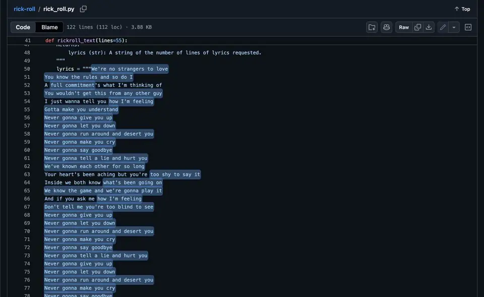
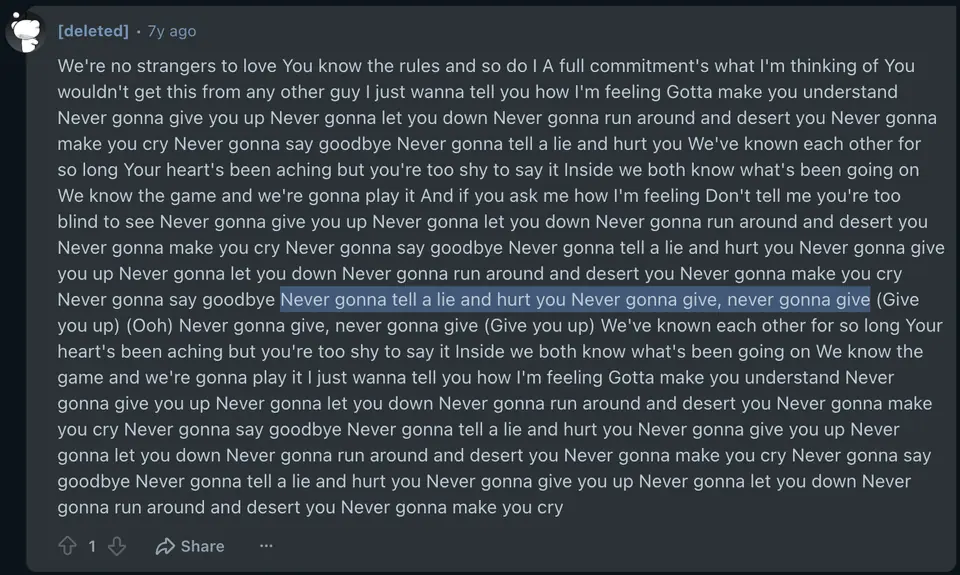
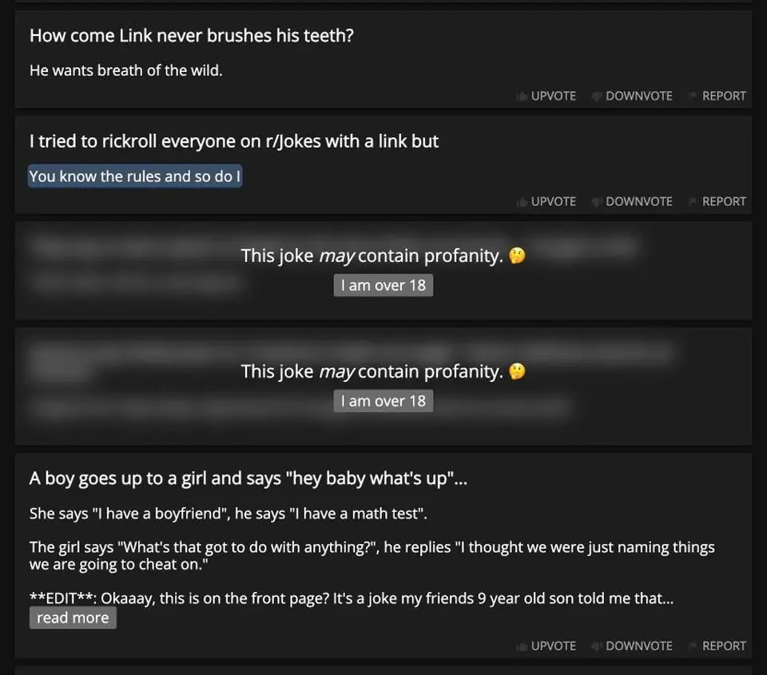
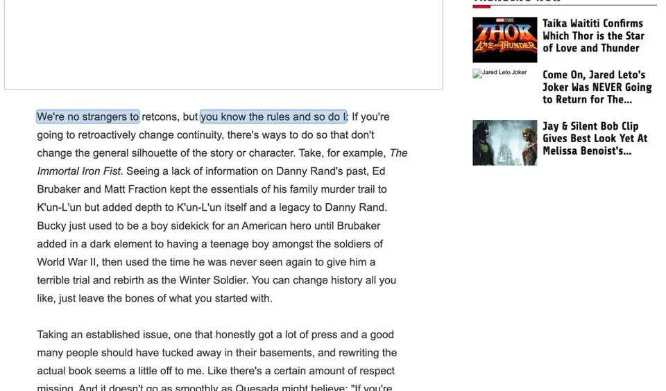
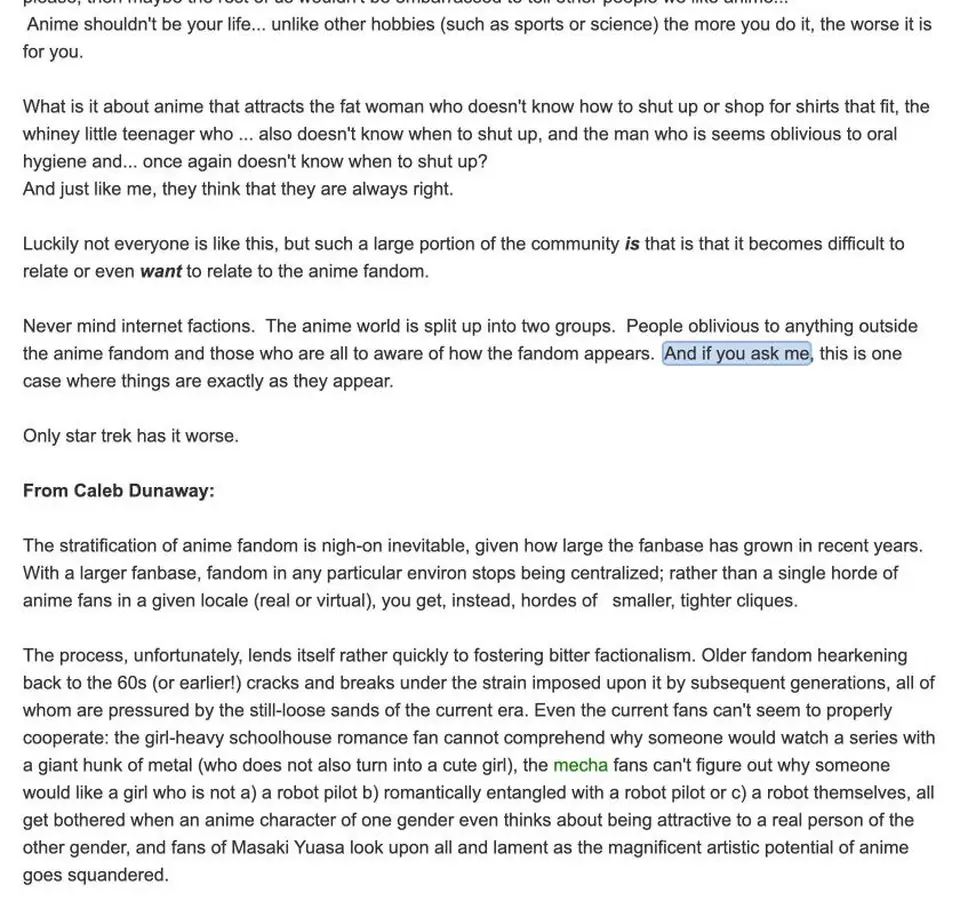
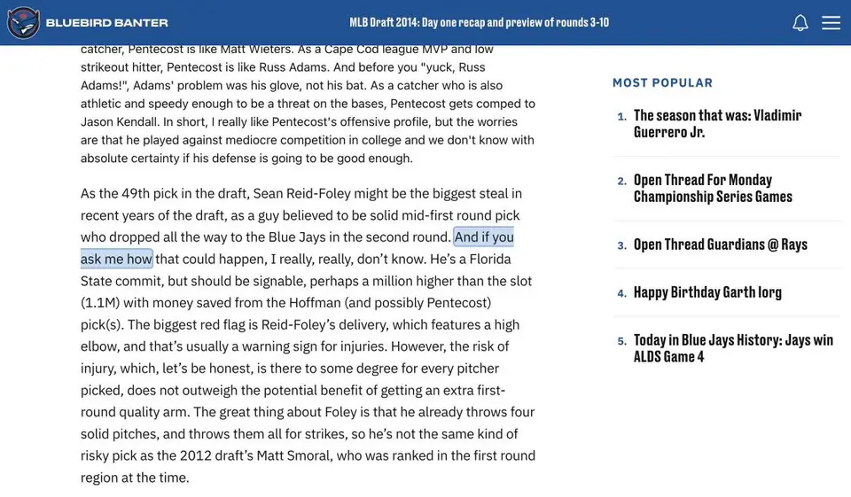
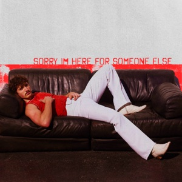
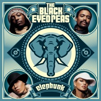
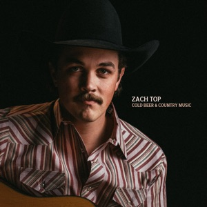
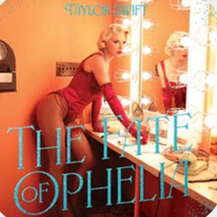

def curate(request, corpus, model): # your method return forget_set, retain_set


Tl;dr Unlearning benchmarks hand the method the exact text to forget, but a real request only names a work: stop reproducing this song. We make the missing step, choosing the forget set, into a benchmark of its own, and find that searching the training data for a song suppresses only about a fifth of what the model can reproduce. Handing over the exact passages suppresses 99.4% of them, along with 86.3% of everything else the model could reproduce that nobody asked about.
Suppose a record label writes to a model developer with a simple request: stop reproducing Never Gonna Give You Up. The request names a song. An unlearning algorithm needs something else: a set of training examples to push the model away from, i.e., a forget set, and often a second set to hold steady, i.e., a retain set.
Almost every unlearning benchmark skips the step in between. TOFU, MUSE and OpenUnlearning [1, 2, 3] give the method its forget set and ask how well it forgets. In practice someone has to build that set, and the request doesn’t say how. We call this step forget set curation, and on this page we ask how much it matters.
Our answer, measured on six open models1 Llama-3.1-8B, Olmo-3-7B, Olmo-3-32B, Qwen3-8B, Gemma-3-12B and Nemotron-Nano-9B. Fewer works are extractable from Olmo-3-7B, so its request has 38 works instead of 50. and 4,616 Billboard Hot 100 songs from 1970 to 2025 plus 50 books, is that it matters about as much as the unlearning algorithm does. Below, we go through which parts of a song a model can reproduce, why the text behind them is so hard to find in the training data, and what happens when you go looking for it anyway. The paper has the full tables; this page is the version with pictures.
Before deciding what to forget, we need to know what the model can reproduce. Following Hayes et al. and Cooper et al. [4, 5], we measure extraction probabilistically. We slide a window over each work in steps of 10 characters and split it into a 100-character prefix x and the 100 characters that follow, z. The extraction probability is the chance that the model, given the prefix, produces exactly that continuation, token by token:
We compute it with teacher forcing, i.e., one forward pass over x followed by z, so no sampling is involved. A window is extractable when pz ≥ τ with τ = 10−3: sample the continuation a thousand times and you expect to see the exact text about once. A work counts as extractable from a model when at least 5% of its windows are.2 100 characters is roughly 20 to 30 tokens, and every one has to come out right. By chance that is hopeless, so even 10−3 is a strong signal.
We find that extraction is patchy, and that the patches differ from model to model. A verse that is extractable for Llama can fall below the threshold for Nemotron, so “the text of the song” is a different target for each model. Repetition seems to help.3 Drive by The Weeknd came out in 2025, after Llama-3.1-8B and Olmo-3-32B were trained. Both still assign high pz to its chorus windows. A chorus that repeats four times is easy to guess the fourth time. Below, you can pick a work and paint each model’s extraction onto its text.
In fact, size matters even within one family. Across the pool of works we draw requests from, 8.27% of windows are extractable from Olmo-3-32B, against 7.20% from Olmo-3-7B. Bigger models can reproduce more, and so have more to forget.
To make a model forget a song, the obvious plan is to find the song in the training data and train against it. That plan assumes the song lives in one place, and it doesn’t. Once a work catches on, it spreads into other text, i.e., outward diffusion: people quote it, paste it into code, parody it and quiz each other on it.
We find that a famous song’s footprint in the training data is enormous, and strange. We search Dolmino, the mid-training mix of Olmo 3 [6], with Infini-gram [7], an index for exact n-gram matches.4 Everything ran on a single node with eight H200s and 3 TB of RAM. Searching corpora this size was bound by memory and storage more than by compute. 94.2% of the words in Never Gonna Give You Up sit inside a run of five or more words that also appears in Dolmino, spread over at least 147 documents. That is typical: 4,596 of our 4,663 works (98.6%) match Dolmino somewhere, with a median of 119 documents per work.5 The most-copied work matches 45,338 documents. Below, you can explore the documents behind Never Gonna Give You Up, grouped by where they came from. Click a page to open it.
In fact, these are not just stock phrases. Raise the bar from five matching words to twenty-five and the matches still cover 56.4% of the song. Our favourites are a Python file on GitHub, filler text on Stack Overflow, and a food review that drops the chorus into a paragraph about a sandwich.
Diffusion also runs the other way. A song released after the training data was collected can still be partly in it, because its lines reuse language that existed long before, i.e., inward diffusion. The Weeknd’s Red Terror came out after Dolmino’s December 2024 cutoff, yet about a fifth of it matches Dolmino, because it quotes a poem from 1910.
We find that this is the normal case. Across our songs, about 27% of a song’s words already appear in other text, and even songs that charted in 2025 come in around 16%.6 Exact matching undercounts. A change in case, whitespace or formatting breaks a match, so the real overlap is higher. Models can also complete text verbatim when every exact n-gram match has been removed from training [8]. Below, you can see how this coverage moves with chart year, along with the Dolmino documents that already contain lines from the paper’s post-cutoff songs.
In fact, this is what makes curation hard from both ends. Outward diffusion means the evidence for an old song is everywhere. Inward diffusion means a document you remove for a new song is also, in part, a document about every other text that uses the same words.
Given a request, the most natural curator is search. We try three: BM25 over a sample of pre-training data, BM25 over Dolmino, and Infini-gram over Dolmino. Each one hands the documents it finds to SimNPO [9] as the forget set.
We find that retrieval suppresses about a fifth of the requested songs’ extractable windows, and about as much of everything else. Averaged over six models, the three retrievers suppress 20.5–21.6% of the requested windows and 23.4–26.2% of the windows we wanted kept. The effect tracks model size. On Gemma-3-12B and Olmo-3-32B, Infini-gram’s forget set suppresses 47.8% and 44.9% of the requested windows, while Olmo-3-7B and Qwen3-8B barely move (1.0–2.8%).7 Olmo-3-32B is the only model where the forget side consistently moves more than the retain side. Llama-3.1-8B is the opposite: it loses 51.2–55.7% of its retain-side extractability while the forget side gains at most 28.9%.
If search finds too little, what about giving the unlearner exactly the windows the model reproduces? This is our evaluation-aware curator. It cheats on purpose: it reads the windows we evaluate on, so it is a stress test of the evaluation rather than a method anyone could deploy.8 Its forget sets are also much bigger: 8,084 to 67,323 windows, against roughly 2,400 to 3,000 for BM25 over pre-training data.
We find that even this forget set does not stay local. It suppresses 99.4% of the requested windows, and also 86.3% of the windows nobody asked about. Answers to questions about the works drop 6.5 points, and general benchmarks drop 5.5 points on average and 10.4 on Llama. Below, you can step through real checkpoints of one of these runs and watch the two walls fade together.
In fact, the collateral damage is not something that creeps in late in training. A quarter of the way through Llama’s run, 96.8% of the requested text is already gone, and so is 83.5% of the rest.
So is the forget set to blame, or the algorithm? We hold the curated sets fixed and swap the unlearner. We find that the same forget set behaves like a different object under each algorithm. The sets from BM25 over pre-training data suppress 10.5% of the requested windows under SimNPO, 98.2% under UNDIAL [10] and 32.8% under RMU [11] (averaged over three models). UNDIAL’s 98.2% is not free either: it comes with 79.0–86.5% suppression on the retain side.9 RMU on Qwen3-8B stalls at 24.5% even with the evaluation-aware sets, which fits the hyperparameter sensitivity its authors report.
With the evaluation-aware sets, SimNPO and UNDIAL both reach 100% suppression on the three models we tested. But UNDIAL leaves general benchmarks where they were (+0.1 points) while SimNPO loses 5.1, which is a five-point capability gap from identical inputs.
Unlearning results are usually reported for an algorithm. Ours suggest they belong to a pipeline: a request, a curator, an unlearner and the edited model that comes out. The forget set is not a premise of unlearning; it is one of the things to evaluate. How should a pipeline that goes from request to data to update be scored from end to end?
Retrieval underspecifies a work, and the evaluation windows overspecify it. Somewhere between them is a forget set whose effect stays local after the update. Signals from the corpus footprint, model-specific extraction profiles, influence estimates or datamodels could all help find it. Which examples suppress the target without taking everything nearby with it?
We only studied verbatim reproduction, which exact overlap can measure. Requests about concepts, entities or facts, and reuse through paraphrase or translation, leave no exact footprint at all. What does curation look like when you can’t search for the words?
@article{jha2026forget,
title = {What to Forget in Unlearning? Forget Set Curation for Language Models},
author = {Jha, Animesh and Khatua, Arpandeep and Allouah, Youssef and Koyejo, Sanmi},
journal = {arXiv preprint arXiv:2608.14855},
year = {2026}
}